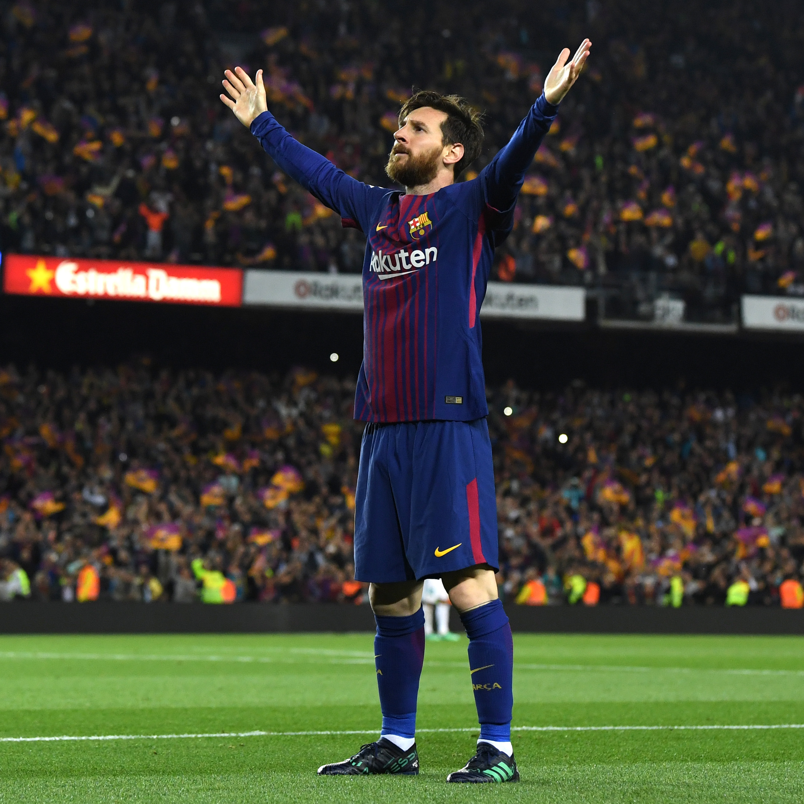

A Paixão pelo Futebol que Move Multidões
Conheça as lendas vivas do esporte mais popular do mundo. Descubra histórias, estatísticas incríveis e momentos que marcaram gerações de fãs apaixonados.
Lendas do Futebol
Os maiores jogadores que marcaram a história do esporte mais popular do planeta

Lionel Messi
🇦🇷 Argentina
8x Bola de Ouro • Campeão Mundial

Cristiano Ronaldo
🇵🇹 Portugal
5x Bola de Ouro • 5x Champions

Neymar Jr
🇧🇷 Brasil
Top 3 Mundial • Campeão olímpico
Números Impressionantes
A Paixão que Une o Mundo
O futebol é mais do que um esporte - é uma paixão universal que transcende fronteiras, idiomas e culturas. Milhões de pessoas ao redor do mundo se conectam através deste esporte magnífico.
Dos campos de terra batida às arenas modernas, o futebol continua sendo o esporte mais popular do planeta, criando heróis e momentos inesquecíveis.